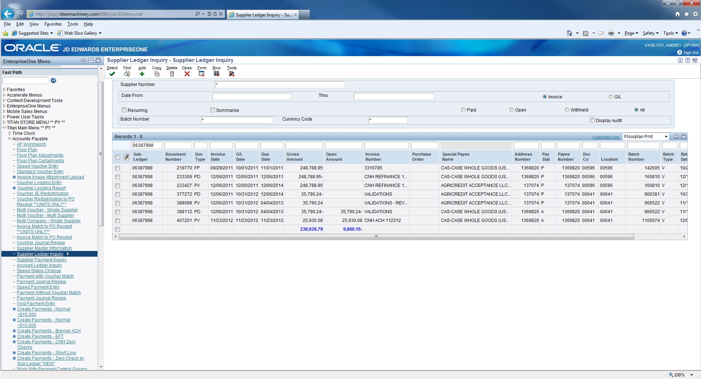
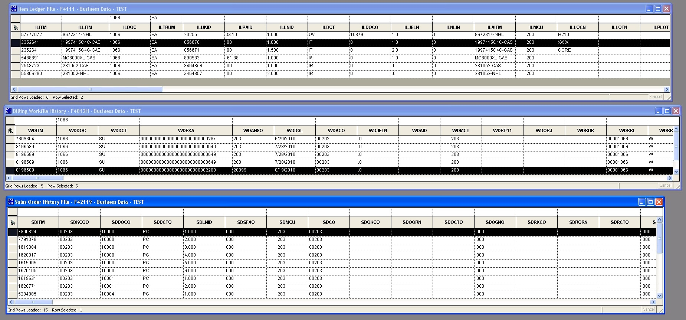
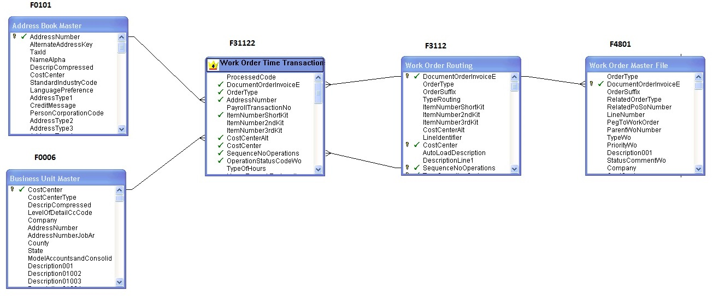
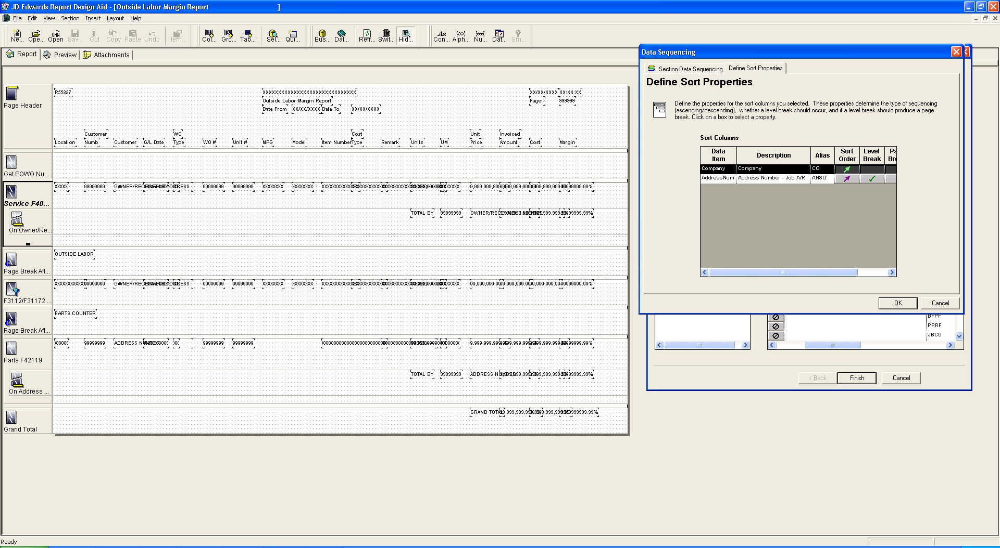
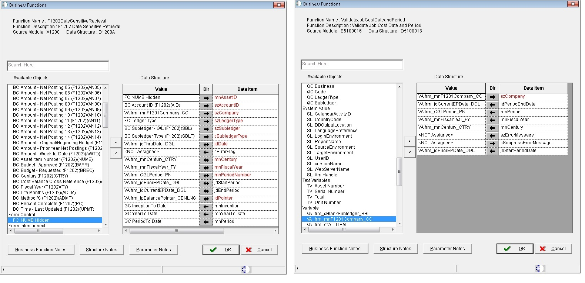

Titan Machinery ERP - JD Edwards Oracle
After I graduated from Minnesota State University Moorhead in 2009 I started working for Titan Machinery as an IT Help Desk and after one year I was promoted to work as a System Analyst on their new ERP Oracle System - JD Edward Enterprise One. The prior ERP system “DIS Keystone” that Titan Machinery had didn’t meet the demands of their growing business and the company decided to replace their legacy system with more advanced ERP. The implementation and roll out of the new ERP system consisted of the following stages:
1) Analysis of business processes, identification of problem areas to improve (automate) and requirements documentation.
2) Design the system, plan its implementation and write technical specifications
3) Development, deployment and configuration of the new ERP system. The company started the transition of their ERP system from its key departments - accounting, finance, operations, parts and service. When the system was deployed in the main departments it was rolled out to all other areas of the company business.
4) The roll out of the system to all company stores and adjustment (improvement) of the system according to company needs.
Being involved in the system roll out I was also involved in the development of JD Edwards Reports and Applications. When I did it my work consisted of the following steps:
1) Elicitate requirements from stakeholders and analyze JD Edwards System

2) Analyze data, identify required tables and created business views


3) Write technical documentation - JDE Report Design Specification
4) develop JD Reports and Application using JDE tools:
Object Management Workbench

Business Functions

Named Event Rules